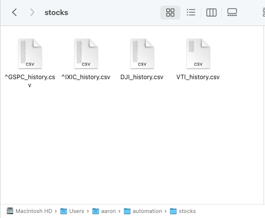
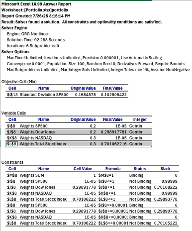

DATE: 2025-08-27
Investing, Index Funds & Portfolio Basics
There are only two rules in investing:
- Don’t be stupid
- Don’t forget rule number 1
Our fight-or-flight response can panic when we see our assests dipping, hastily pressing that sell button, counting the losses, and buying other assests non-declining. Whereas if we waited and played the long run, eventually, the assests would rise again.
Assests are like a star athlete, there will be times high and low performance. Through coaching and hard work, performance improves, and the teams that stay loyal enjoy the wins.
A good stock is often characterized just like that. If you look at the total stock market, you can see that even though there are some dips, the overall trend is rising.

I mentioned before to invest in index funds. Index funds are goodie bags of different companies. It’s a big soup mixture of all the good and bad into one serving. Instead of investing in one company, you invest in multiple, stretching your risk. Examples include SP500, NASDAQ, VTSAX, and Dow Jones.
Using Excel, we can create a hypothetical portfolio to evaluate the best way to allocate your shares among these funds, or any other stock/bond/ETF you choose.
- Choose your index funds: This example uses SP500, NASDAQ, VTSAX, and Dow Jones. We will be downloading them as CSV data.
-
Create a folder on your computer to store all CSV files and the program you will use (requires download).
Use this program: yearly_stock.py to input ticker symbols and download historical prices of these funds. This provides the last 50 years of each index fund’s price on January 1st (approximation of a share’s worth).
- If it doesn’t work, check your ticker symbol again, wait and try later, or use a different ticker symbol. Yahoo Finance can be used manually as well.
- Replace the “file path” with the actual file path to your folder.
- Open terminal and run:
cd "path/to/your/folder" python yearly_stock.py
-
Import CSV files into Excel: Once downloaded, import each CSV into an Excel sheet. Organize your sheets and title them clearly.
- Ensure the comma delimiter is selected.
- Copy and paste all data into a single sheet called Portfolio.
-
Create a covariance table: This compares the relative volatility of each stock with another, including itself.
- If confused about selecting data, watch a tutorial such as "Excel Tutorial for Beginners."
-
Create a table of weights and returns: This analyzes how much percentage of your shares should go into each stock.
- Use
=SUM(weights)as a formula to ensure total weights equal 1.
- Use
-
Calculate expected return, variance, and standard deviation: This shows how much your portfolio might return and its relative risk.
- Variance and standard deviation measure risk; the higher the number, the more volatility—meaning the portfolio may gain or lose significantly.
-
Optimize portfolio with Solver: In Excel (under Tools), use Solver to adjust weights subject to constraints:
- Weights must be ≥ 0 and ≤ 1.
- All weights must sum to 1.
- You can set the objective to maximize expected return or minimize variance (risk).
My portfolio, consisting of SP500, NASDAQ, VTSAX, and Dow Jones, has weights of:
-
1 for NASDAQ for the highest return
-
0.7 VTSAX, 0.3 Dow Jones for the lowest risk

Congratulations! You have made a portfolio for investing. Otherwise, you can simply copy my "safe" investment style. I personally use the lowest risk portfolio for my ROTH IRA and the highest return for my brokerage.